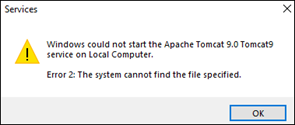

Tomcat Service Fails to Start
Problem 1: Tomcat service fails to start, if it is manually restarted or on restarting the machine.
Cause: JDK is upgraded to a higher version by auto update.
Solution:
- Check if the version of JDK home in the environment variables matches with the installed JDK version.
- You can check the installed JDK version by navigating to the following folder ..\Program Files\Java. The name of the JDK folder, for example, jdk 21.0.2, below the Java folder indicates the installed JDK version.
- To check the version of JDK home in environment variables, navigate to the Control Panel > System > Advanced System Settings. In the System Properties dialog box, click Environment Variables. In the System variables section, search for JDK_Home. The version of the JDK_Home environment variable displays in the Value column.
- Check if the version of the JDK_Home variable matches with the version of the installed JDK.
- If the value of the JDK_Home is different, then set its version to that of the installed JDK version. For example, JDK_HOME=..\Program Files\Java\jdk 21.0.2.
- Navigate to ..\Program Files\Apache Software Foundation\Tomcat 10.1\bin and run the Tomcat10w.exe file.
- In the Apache Tomcat 10.1 Tomcat10.1 Properties dialog box, click the Java tab and set the value of the Java Virtual Machine to ..\Program Files\Java\jdk 21.0.2\bin\server\jvm.dll.
- Restart the Tomcat service.
Problem 2: Tomcat service fails to start, if CCom port is running on the port number 8005.
Cause: CCom port is using the port number 8005.
Solution:
Ensure that the CCom port is not running on the port number 8005.
Problem 3: Apache Tomcat service fails to start and following error message is displayed on installing the Advanced Reporting extension with Apache Tomcat 10.1.

Cause: Apache Tomcat 9.0 is installed on the machine.
Solution:
Delete the Apache Tomcat 9.0 folder located at path: C:\Program Files\Apache Software Foundation.